IFC Section Tool Menüleiste → Schnitt erzeugen
Sie können verschiedene Schnittebenen erstellen, indem Sie das 3D-Modell schneiden. Jeder Schnitt besteht aus einer Schnittebene mit definierbarer Position, Tiefe, Höhe und Blickrichtung. Die Schnitte werden anschließend an ISBCAD übergeben und dort als Zeichnungselemente weiterverwendet. Sie können weitere Schnitte nach dem Export erzeugen und diese an dieselbe ISBCAD-Instanz übergeben.
Schnittebenen
Das IFC Section Tool bietet Ihnen unterschiedliche Methoden, um Schnitte zu erzeugen:
Vertikalschnitt. Dieser Schnitt umfasst einen zur X-Achse parallel verlaufenden Bereich. |
|
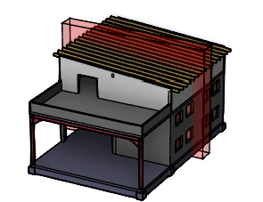 |
|
Vertikalschnitt. Dieser Schnitt umfasst einen zur Y-Achse parallel verlaufenden Bereich. |
|
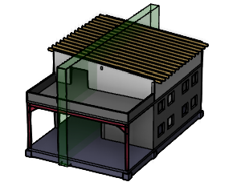 |
|
Horizontalschnitt. Dieser Schnitt umfasst einen zur Z-Achse parallel verlaufenden Bereich. |
|
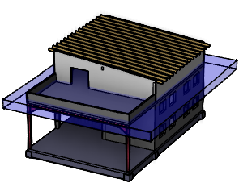 |
|
Freier Schnitt. Dieser Schnitt kann parallel zu schräg verlaufenden Bauteilen gesetzt werden. Sie definieren die Position des Schnitts im 3D-Raum durch das Anklicken eines Bauteils. |
|
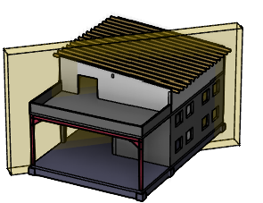 |
|
1.3D-Modell ausrichten und anpassen
§Kippen Sie das Modell ggf. mit den verschiedenen Navigationsmethoden oder wählen Sie eine der Standardansichten.
§Erhöhen Sie in der Menüleiste unter Ansicht ggf. die Transparenz, um verdeckte Objekte sichtbar zu machen.
§Wählen Sie in der Menüleiste die Projektionsart. Sie können zwischen den Einstellungen Perspektive und Parallelprojektion wählen.
§Bestimmen Sie mit den Ansichtsfiltern, welche IFC-Objekttypen im 3D-Modell dargestellt werden sollen.
2.Schnitt erzeugen
§Wählen Sie in der Menüleiste, welche Schnittebene Sie anlegen wollen: in X-, Y- oder Z-Richtung oder frei Frei.
Der Schnitt wird erzeugt. Sie können den Schnitt nachfolgend anpassen.
Freien Schnitt [Frei] setzen
§Klicken Sie im Details-Bereich auf Parallel zu.
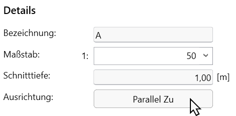 |
§Klicken Sie anschließend im 3D-Modell das Bauteil an, zu dem der Schnitt parallel ausgerichtet werden soll.
-Gebogene Flächen werden nicht berücksichtigt.
-Blenden Sie ggf. Schnittebenen oder Objekttypen aus, wenn das Bauteil nicht anklickbar sein sollte.
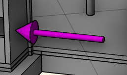 |
§Die Blickrichtung wird durch Pfeile am Schnittquader dargestellt. In dieser Richtung wird der Schnitt gesetzt und exportiert.
Pfeilfarbe:
·Rot = X-Richtung;
·Grün = Y-Richtung;
·Blau = Z-Richtung;
·Gelb = Freier Schnitt
§Definieren Sie den Schnitt durch das Halten der linken Maustaste und Bewegen der Maus, indem Sie eine Rechtecksfläche oder die Kanten des Quaders in die gewünschte Richtung ziehen.
Beispiel: Schnitt in X-Richtung |
||
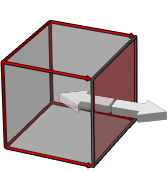 |
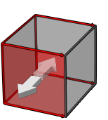 |
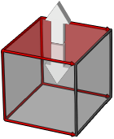 |
Ziehen Sie die farbige Fläche mit der Maus, um die Schnitttiefe zu ändern. Das Ziehen der gegenüberliegenden Fläche verschiebt den gesamten Quader. |
Ziehen Sie die farbige oder die gegenüberliegende Fläche mit der Maus, um die Ausdehnung in Y-Richtung zu ändern. |
Ziehen Sie die farbige oder die gegenüberliegende Fläche mit der Maus, um die Ausdehnung in Z-Richtung zu ändern. |
§Um eine genaue Schnitttiefe einzustellen, beobachten Sie den Messwert im Details-Bereich während der Mausbewegung. Geben Sie alternativ den numerischen Wert per Tastatur in Metern in das Eingabefeld ein und bestätigen Sie mit der Tab-Taste.
Sämtliche Geometrieelemente, die sich innerhalb des Schnittquaders befinden, werden an ISBCAD übergeben.
§Geben Sie als Bezeichnung für den Schnitt eine beliebige Zeichenfolge aus Buchstaben und Zahlen ein. Bestätigen Sie mit der Tab-Taste.
Der zweite Teil der Bezeichnung wird im Bereich Schnitte automatisch ergänzt.
§Geben Sie einen Maßstab für den Schnitt ein oder wählen Sie durch Klicken auf  einen Maßstab aus der Dropdown-Liste.
einen Maßstab aus der Dropdown-Liste.
Dieser Maßstab ist unabhängig von dem Maßstab, der in ISBCAD voreingestellt ist.
§Mit der Option Z-Schnitt im Grundriss spiegeln werden Horizontalschnitte [Z] gespiegelt an ISBCAD übergeben.
Damit der Schnitt in ISBCAD in der für den Ingenieurhochbau typischen Darstellungsart angezeigt wird, setzen Sie den Haken. Stellen Sie die Blickrichtung zudem von unten nach oben ein.
§Unter Schnittvorschau wird Ihnen eine 2D-Ansicht der Schnittebene angezeigt. Mit dem Mausrad können Sie in der Vorschau zoomen. Die Vorschau kann automatisch oder manuell generiert werden.
Je nach IFC-Modell kann es bei aktiver 2D-Schnittvorschau zu Performanceeinschränkungen beim Ändern von Schnittebenen kommen. Bei größeren Modellen können Sie das Generieren der Schnittvorschau beschränken oder komplett deaktivieren, um flüssiger arbeiten zu können. Siehe: IFC Section Tool Einstellungen
§Wenn Sie nur die Schnittebene darstellen möchten, setzen Sie bei Modell zuschneiden einen Haken. So können Sie den Schnitt präziser setzen.
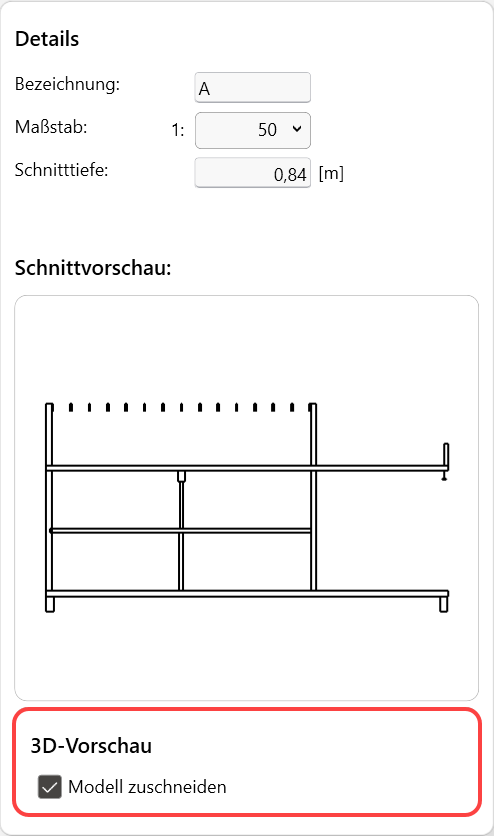 |
Vorschau einer Schnittebene in Y-Richtung Die Schnittkanten werden am Schnittansatz hervorgehoben. Sie verändern sich, wenn Sie die Schnittebene im Modell bewegen. 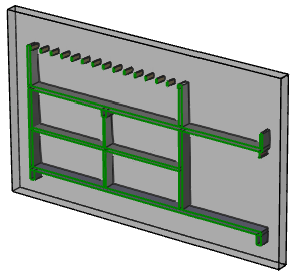 |
§Erzeugen Sie ggf. weitere Schnittebenen.
Die definierten Schnitte werden im Abschnitt Schnitte angezeigt.
Ändern der Schnittposition und -parameter
§Sie können jeden Schnitt nachträglich bearbeiten, indem Sie den Schnitt im 3D-Modell mit der Maus neu positionieren.
§Um die Schnittparameter zu ändern, klicken Sie unter Schnitte den Schnitt an und bearbeiten Sie die Eigenschaften im Details-Bereich.
Ein- und Ausblenden von Schnitten
§Um einen Schnitt im Modell auszublenden, markieren Sie den Schnitt und klicken Sie auf bzw. auf , um ihn wieder einzublenden.
Ausgeblendete Schnitte werden nicht nach ISBCAD übergeben.
§Über das Kontextmenü können Sie alle Schnitte aus- oder einblenden. Klicken Sie dazu mit Rechtsklick in die Schnittliste und wählen Sie den entsprechenden Eintrag:
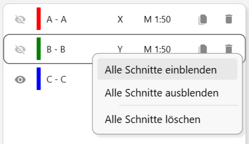 |
§Wenn Sie Schnittdefinitionen exportieren, werden auch ausgeblendete Schnitte exportiert.
§Um einen Schnitt zu kopieren, markieren Sie den Schnitt und klicken Sie auf .
§Geben Sie im Dialog eine Bezeichnung ein oder übernehmen Sie den Vorschlag.
§Geben Sie die Schnitttiefe der Kopie ein.
§Geben Sie den Abstand der Kopie zur Blickrichtung des Schnittes ein (Verschiebung). Der Abstand gilt vom Pfeilanfang des zu kopierenden Schnittes.
Mit können Sie die Schnitttiefe als Abstand übernehmen, um die Kopie direkt an das Pfeilende des kopierten Schnittes zu setzen.
§Bestätigen Sie mit Weiter, um die Kopie zu erstellen, oder brechen Sie die Aktion mit Abbrechen ab.
§Um einen Schnitt zu löschen, markieren Sie den Schnitt und klicken Sie auf  .
.
§Über das Kontextmenü können Sie alle Schnitte löschen. Klicken Sie dazu mit Rechtsklick in die Schnittliste und wählen Sie Alle Schnitte löschen.
Versehentlich gelöschte Schnitte können mit der Korrekturfunktion wiederhergestellt werden.
Korrekturfunktion
§Um Aktionen zurückzusetzen oder wiederherzustellen, nutzen Sie die Korrekturfunktion.
Zugehörige Aufgaben:
·IFC-Objekte ein- oder ausblenden
·Transparenz des 3D-Modells einstellen
·Schnittdefinition exportieren
Zugehörige Referenzen: